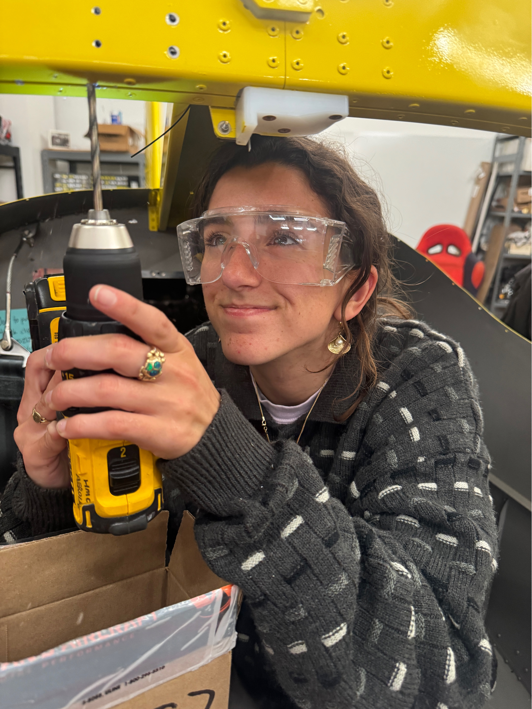
Hi I'm Leilani! Welcome to my portfolio! I am an engineer who loves to combine deep technical expertise with design thinking and creative problem solving. My greatest strength is my ability to adapt and learn quickly, diving in head first to bridge the gap between my experience and the task at hand. This is something I've honed through a broad range of unique experiences and projects. I'm a dedicated team member and love to assess the team and design space and move forward where I am most needed. I am excited to enter industry with curiosity and enthusiasm as I continue to grow.
Built a digital synthesizer out of a barcode scanner by implementing a digital signal processing pipeline on an FPGA and MCU that manipulates a square-wave input from a barcode scanner to output an audible frequency-modulated sine wave in response to scanning a barcode pattern.
Learn More →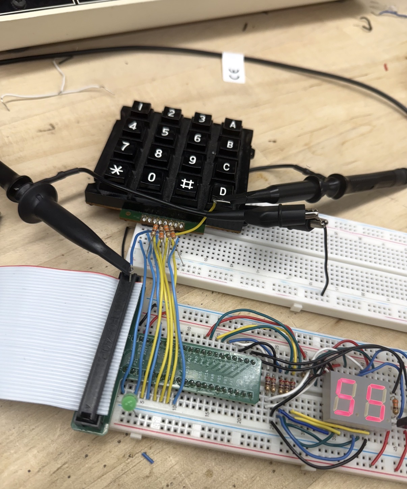
Series of embedded systems projects on MCU and FPGA for E155 demonstrating mastery of MCU and FPGA programming and communication protocols.
Learn More →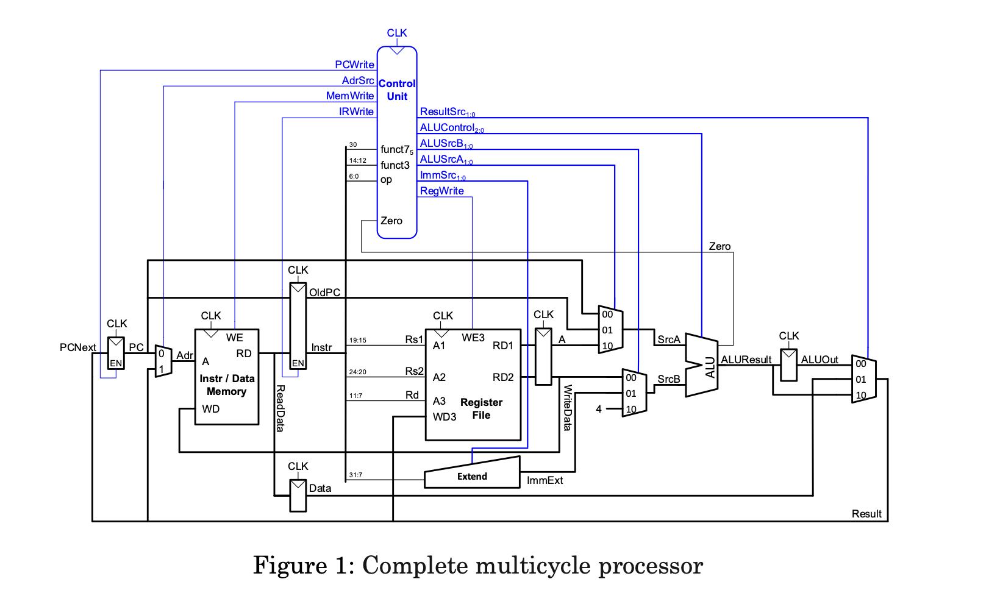
Designed and implemented a multicycle RISC-V processor in SystemVerilog with unified memory and modified control signals. Simulated and verified functionality on Intel Quartus, achieving full test coverage and adapting single-cycle components developed in previous coursework.
Learn More →Built a Vans RV12is two-seat light sport aircraft fabricated primarily from sheet metal and pop rivets, with a 100 horsepower Rotax engine and Garmin VFR avionics. Aircraft Completed FAA inspections. Helped assemble the plane body and installed all avionics.
Learn More →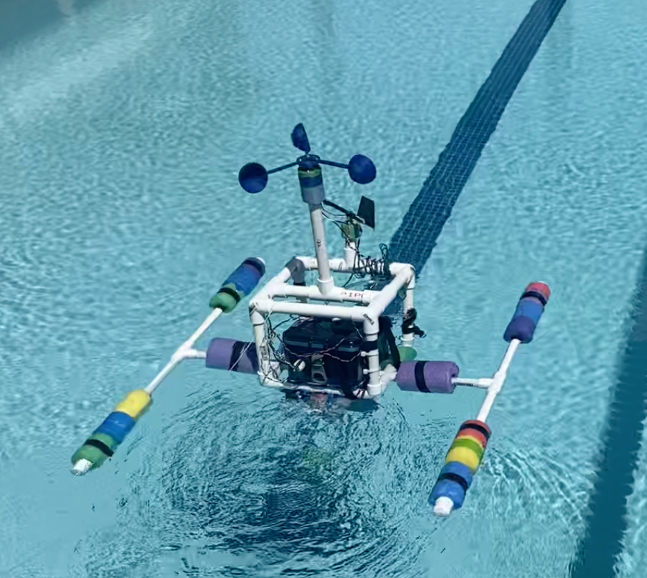
Designed and deployed an Autonomous Surface Vehicle to compare different hydrodynamics of cone and dome shaped nose cones in the ocean. The purpose of the experiment was to compare simulation to reality in a non-ideal environment to consider how both methods can be used to predict the behavior of underwater vehicles. The robot measured its own velocity along with the applied drag force to the nose cones and autonomously navigating a predetermined route using an embedded GPS.
Learn More →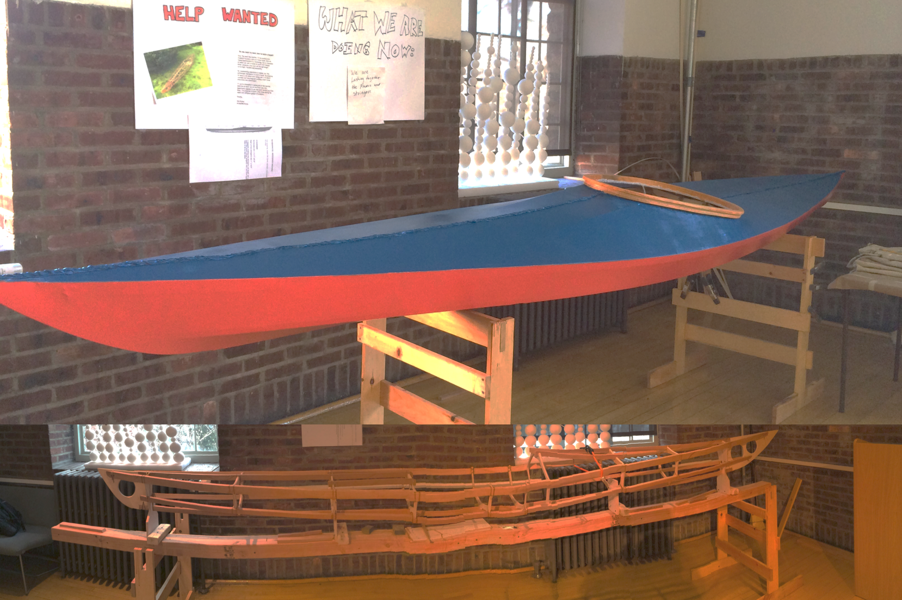
Designed and built a skin on frame kayak out of wood and treated canvas.
Learn More →Built a series of assistive devices including chairs, communication tools, and mobility devices during my tenure at the ADA.
Learn More →After talking to the Cape Eleuthera community and discovering what infrastructure could increase beach accessibility and recreation, I built a tetherball net out of a reclaimed sailboat mast, tire and concrete; Built and installed a retractable shade structure out of self-milled invasive casuarina pine; Built a picnic table out of junkyard wood and rubber lumbar.
Learn More →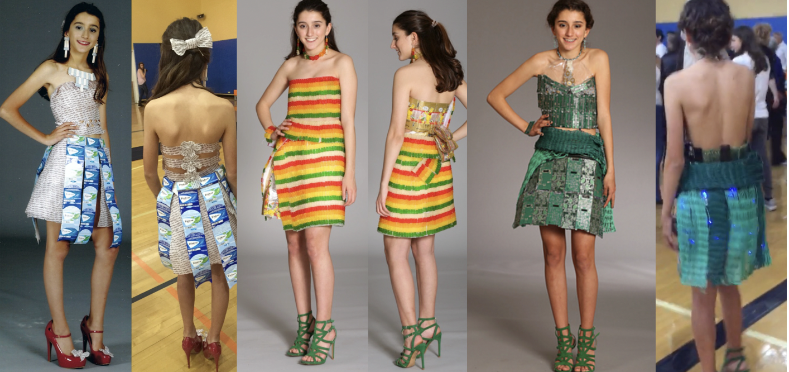
Built wearable sculptures out of Recycled E-waste, Gummy Bears and Gum Wrappers. All pieces involved attaching components to each other without the use of a base.
Learn More →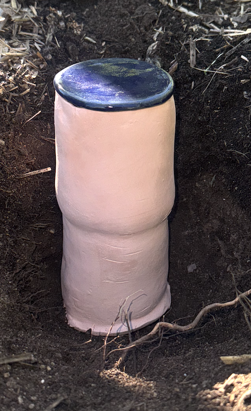
Created a passive watering system by making and installing hoyas a traditional indigenous way of watering plants through porous clay, an adobe native wildflower seed bomb pollinator garden to support native species, chicken furniture to support enrichment for the chickens, restored a neglected pomelo tree by building and installing tree supports, and created fruit bowls to be placed throughout campus for students to eat the fruits grown in the garden that previously went unnoticed. This was a collaborative effort that involved understanding community interactions with the garden, garden steward needs, and collaborating with a group of artists.
Learn More →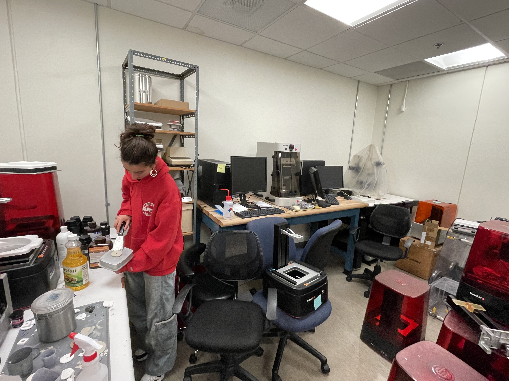
Harvey Mudd College
Developed a novel ceramic resin and calculated the average abrasiveness of available commercial resins for the purpose of additive manufacturing through Stereolithography 3-D printing. Co-Authored 3 abstracts and 2 posters presented and published through the Society of Tribologists and Lubricant Engineers 2025 conference.
Learn More →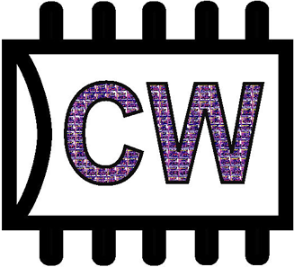
Volunteered for the Clay-Wolkin Fellowship at Harvey Mudd Designing Wally, a CORE-V RISC-V microprocessor in collaboration with the Open Hardware Group. Involved in design and verification of the processor. Co-developed a python script that automates a daily run of all test benches, updating our team of bugs daily.
Learn More →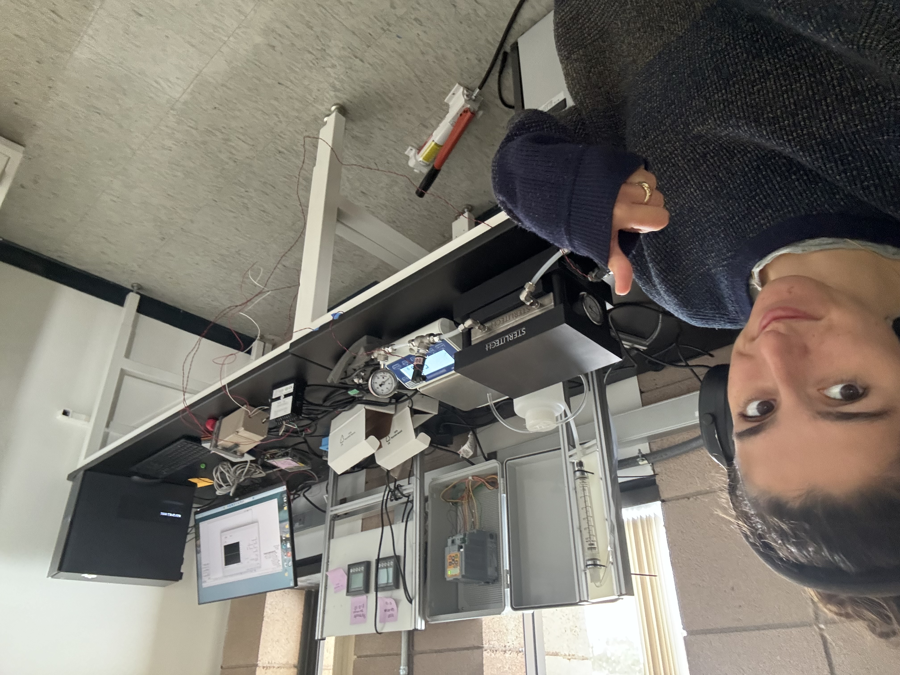
Harvey Mudd College
Built a fully automated bench-scale reverse osmosis system using LabVIEW to reduce manual testing time by 90%, enabling multi-day continuous operation. Research supports optimization of power plant water reuse.
Learn More →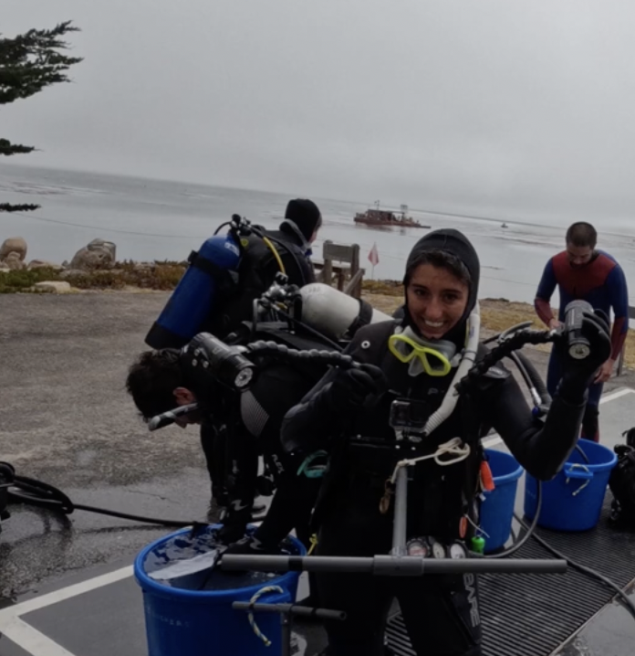
Stanford's Hopkins Marine Station
Conducted underwater diving surveys of local giant kelp forests continuing the longest running kelp dataset (30 years). Co-Created an open-source database of benthic and ocean floor survey videos for national research efforts. Designed and conducted original research project investigating nudibranchs and sea sponge interdependence.
Learn More →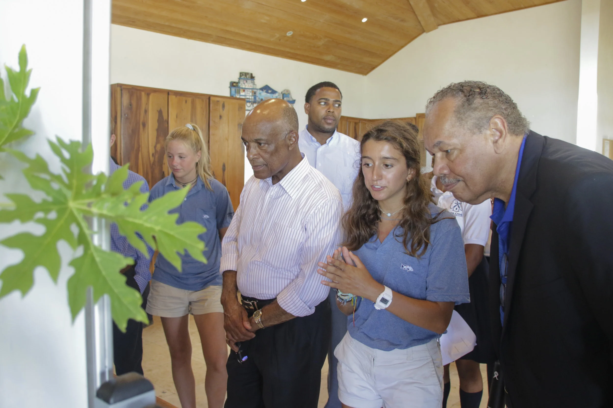
Eleuthera, Bahamas
I was part of a team of 8 students who worked with the local primary school to tutor struggling readers and lead a weekly library hour for students grades 2 through 5. We designed a reading outreach model and data collection methods to research the impact of student tutoring (results: students improved by an average of two reading levels over the course of a semester-2x the average rate!) Presented results to the Bahamian Minister of Education.
Learn More →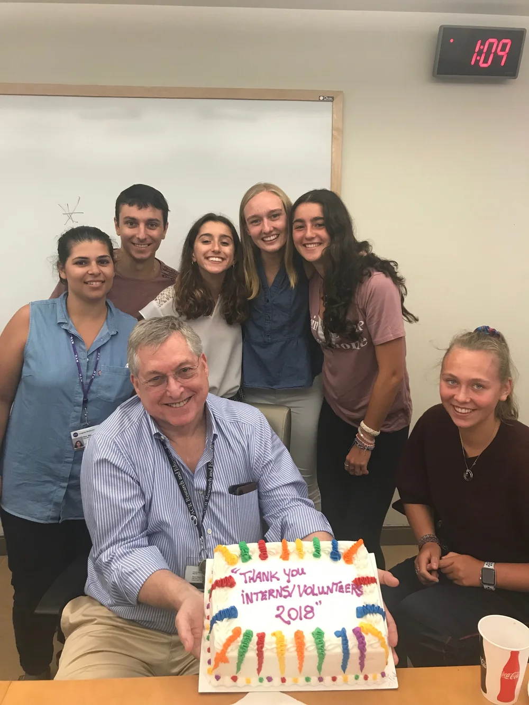
NYU Langone Medical Center
Researched the effect of a novel drug on osteoarthritis and wrote a paper.
Learn More →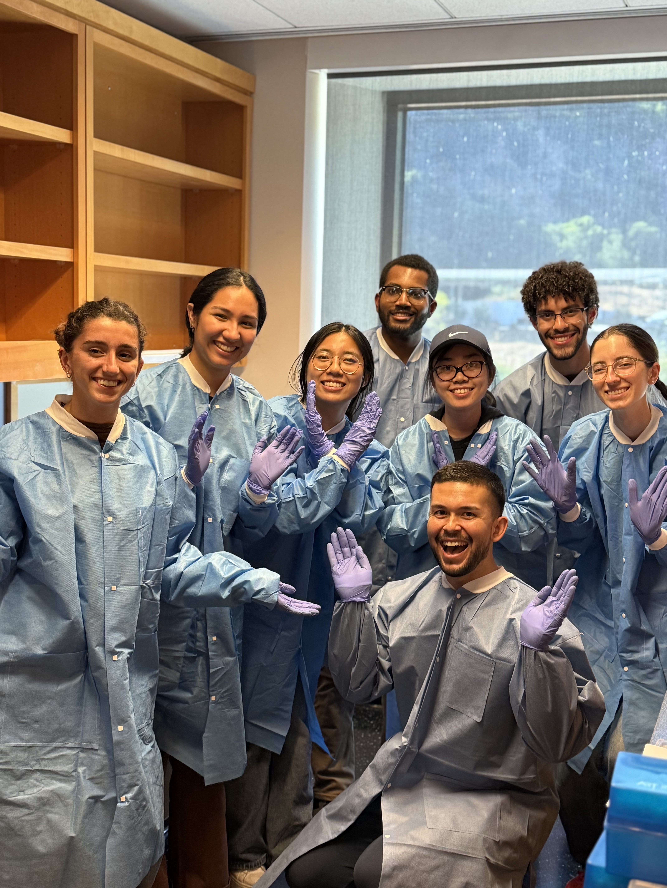
Leading a team of 7 peers in Robotic Automation of a new class of bioreactors in the cell and gene therapy space. Company will deploy this in server farms like clean rooms for mass production of life saving biologics.
Learn More →Worked in the experience design center as a product designer and sustainability consultant to different instrument teams and business units as part of a multidisciplinary tiger team.
Learn More →Collaborated with peers, USDA, and Auburn University to digitize an entomology research tool (Electropenetrography) used to study insect feeding behavior by designing and verifying a hand held Bluetooth enabled system to replace the legacy instrument which previously required 8x4 feet of bench space.
Learn More →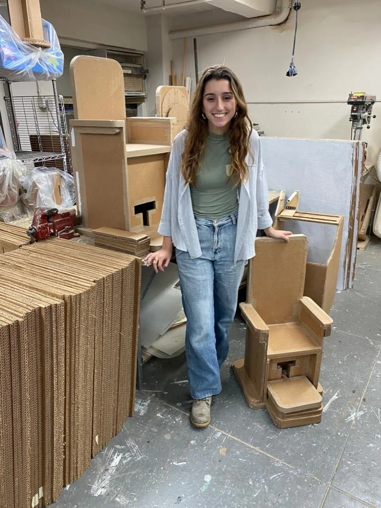
Designing and fabricated adapted technologies, consulting with occupational therapists, educators, and families to ensure client needs were met.
Learn More →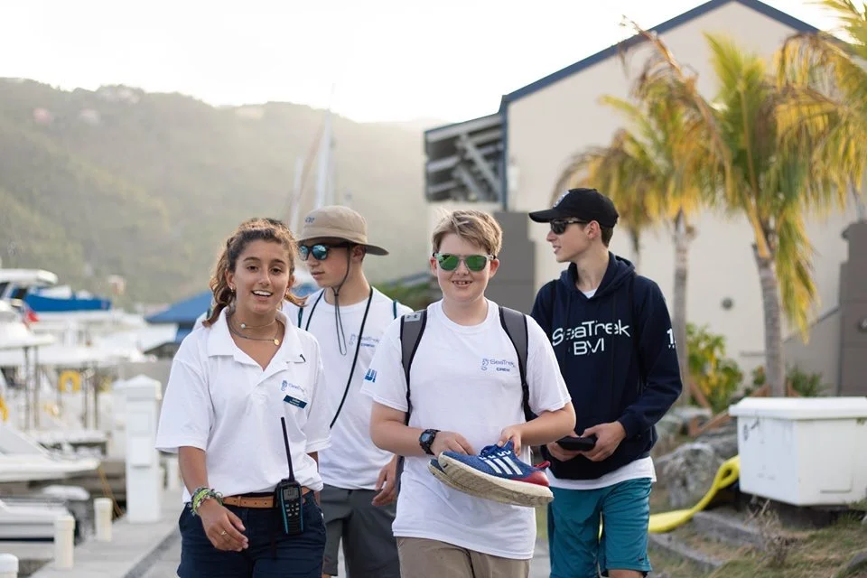
Progressed from being an intern to being a marine ecology instructor and scuba diving guide, to leading their Bahamas program, overseeing a 60' sailboat, 5 crew members, and 20 students for Summer 2021. Created a new place-based science curriculum for a new course area, and worked as a Divemaster (3 years, taught and led 200 divers) and Program Lead (1 year) while actively maintaining and operating yachts and overseeing young adults (ages 12-22).
Learn More →If the PDF doesn't display, click here to view it in a new tab.
Your contact information here